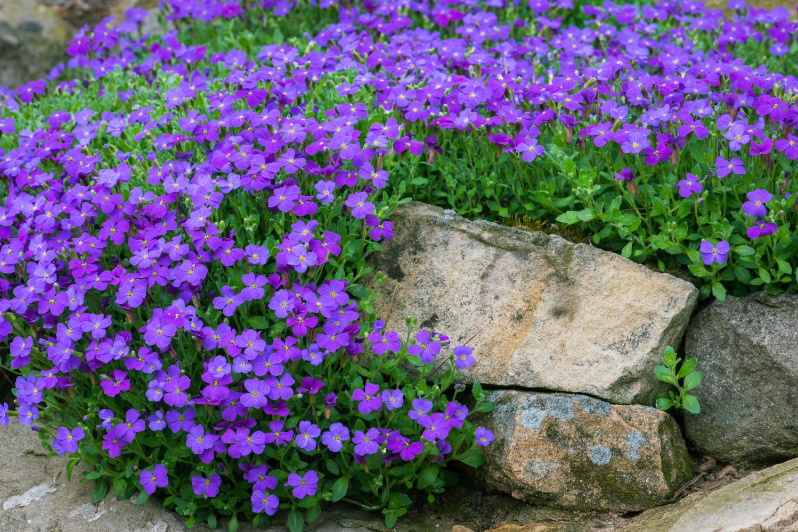
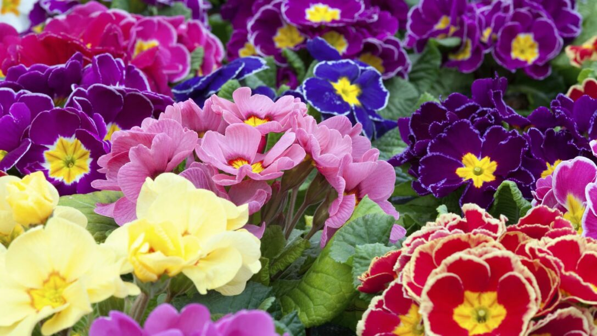
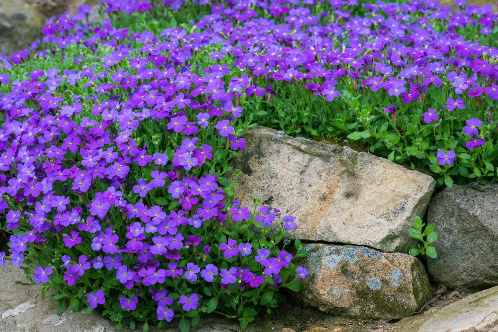
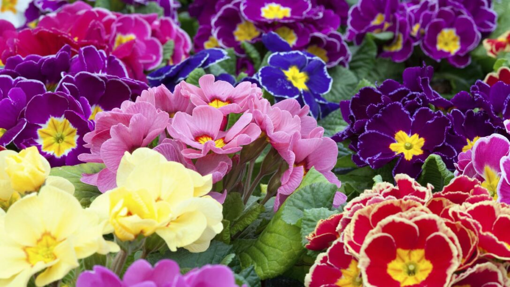
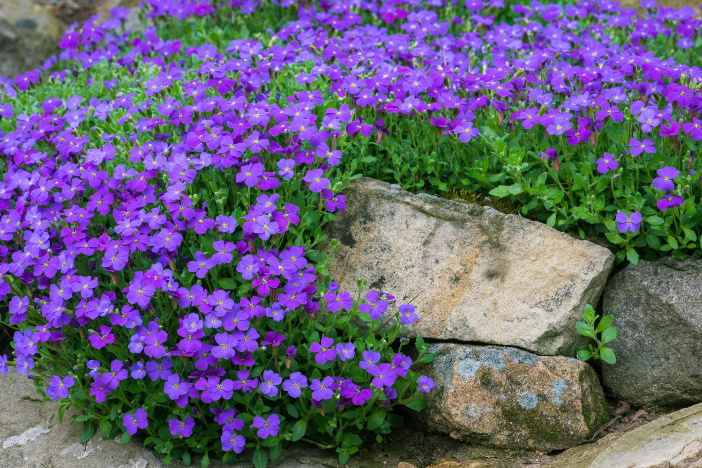
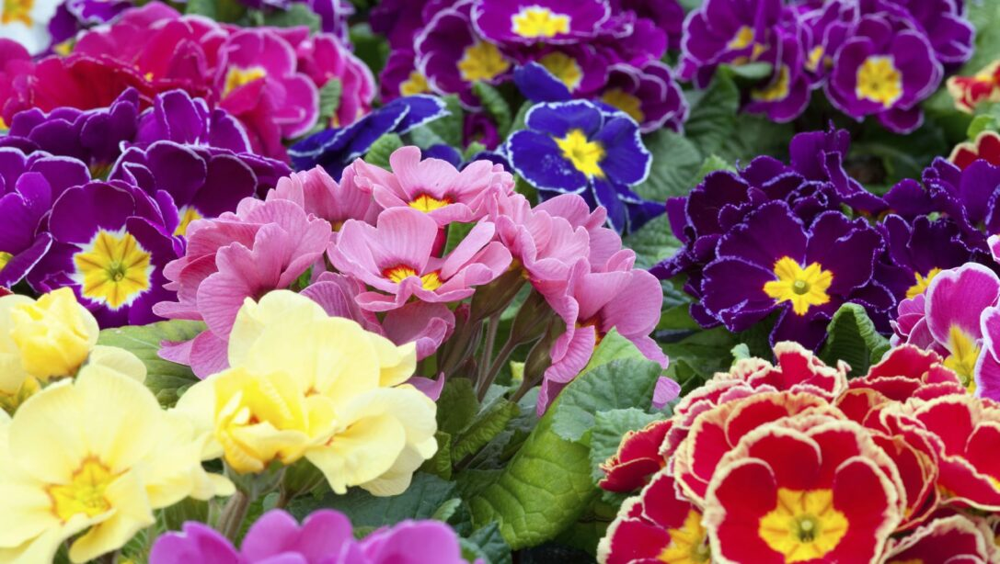
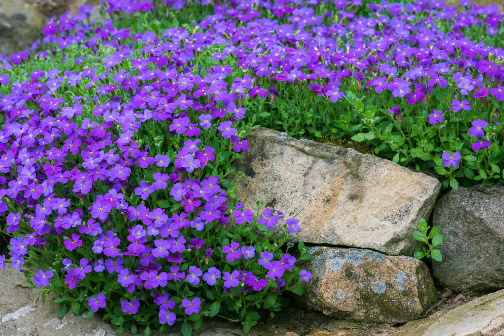
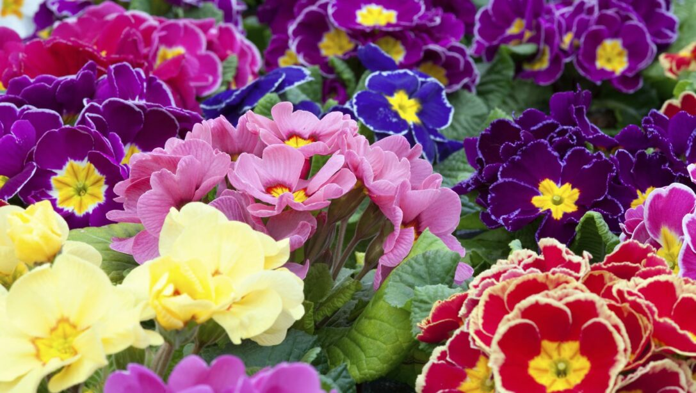

when is the best time to start planting in spring?
Best time to start planting is after the last frost has passed which is when night time temperatures start
rising above 0°C to avoid damaged leaves and young plants dying
what are ideal spring flowers to plant for a vibrant garden?
Aubrieta blooms from march to may. It grows in sun or semi-shade, on any well drained soil, and even windy areas.
Pansies need at least 6 hours every day and love the cold of earlier spring. Available in many different colours.
Primrose is also best in earlier spring and has vibrant colours.
how do i prevent and manage springtime pests in my garden?
Make sure you monitor your garden to spot and correctly identify insects. Watch out for signs of damage.
This helps to recognize the organism or disease, whether its spreading or is just an isolated incident, etc.
Hand-pick caterpillars or eggs from plants and the undersides of leaves. Capture them with insect sticky traps. If necessary, apply a pest control product. There are various organic solutions that you can use.
what vegetables and herbs should i start growing in spring?
Herbs and vegetables are the best planting options for spring.
Many herbs are fairly cold-tolerant, but dont transplant the majority out into the garden until mid-May.

how can i prepare my soil for spring planting?
Best type of soils to prepare in spring are light and sandy
After the frost has passed the soil will be compact → 1st step is to loosen it using a sharp spade → 2nd step add compost and amendments depending on what your soil needs (use soil test to check)
what are some tips for starting seeds indoors in preparation for spring planting?
Fill pots with fresh, moistened seed-starting mix. Don't use garden soil.
Follow the seed packet instructions for planting
Loosely cover the pots with clear plastic wrap which helps maintain humidity and warmth.
Place your seed pots in a location that's warm and free of drafts, but not in direct sun.